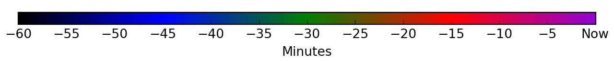

RTL-3D
.
Home
Real-time
Monitor
Daily Trigger Statistics
Site-Recorded Waveform Output
Site status
Login
Lightning real-time monitoring by RTL-3D Kilat sensors
Current time
SW Lat
SW Lng
NE Lat
NE Lng
Apply Bounds
Fit Map
Calibrate (drag corners)
Load URL
Show/Hide CappiRadar
Opacity

Radar Echo
(MET MALAYSIA)
Himawari Satellite Image
(MET MALAYSIA)
📡 Station Network
📂 Loaded Files